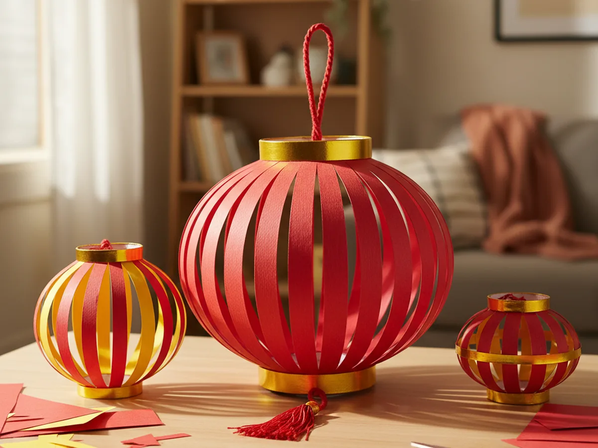
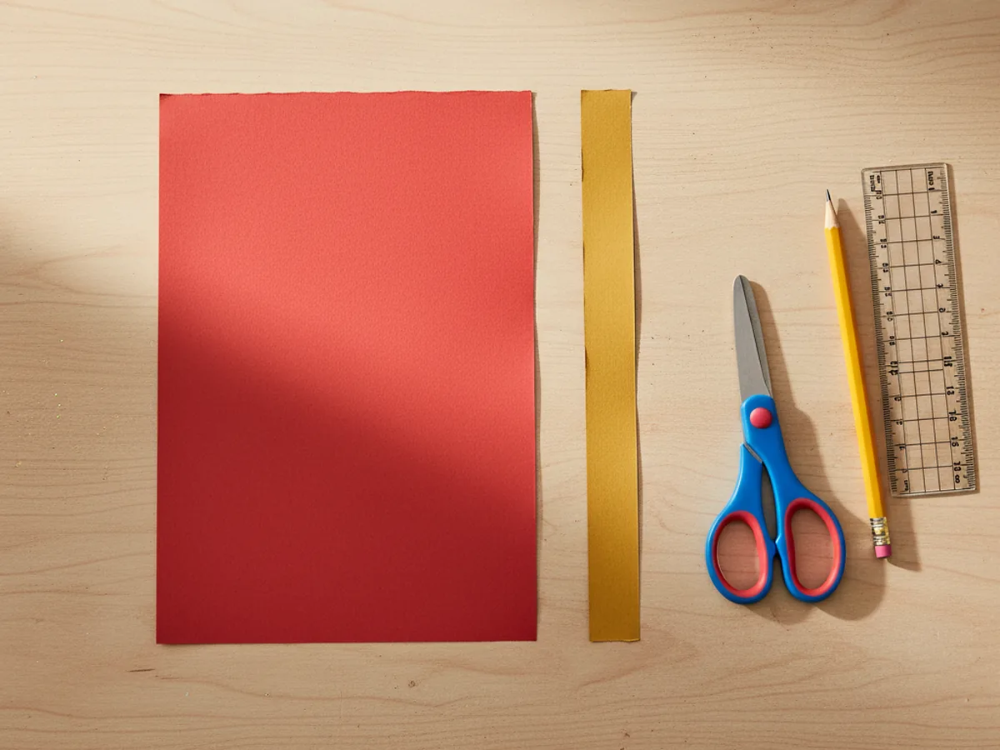
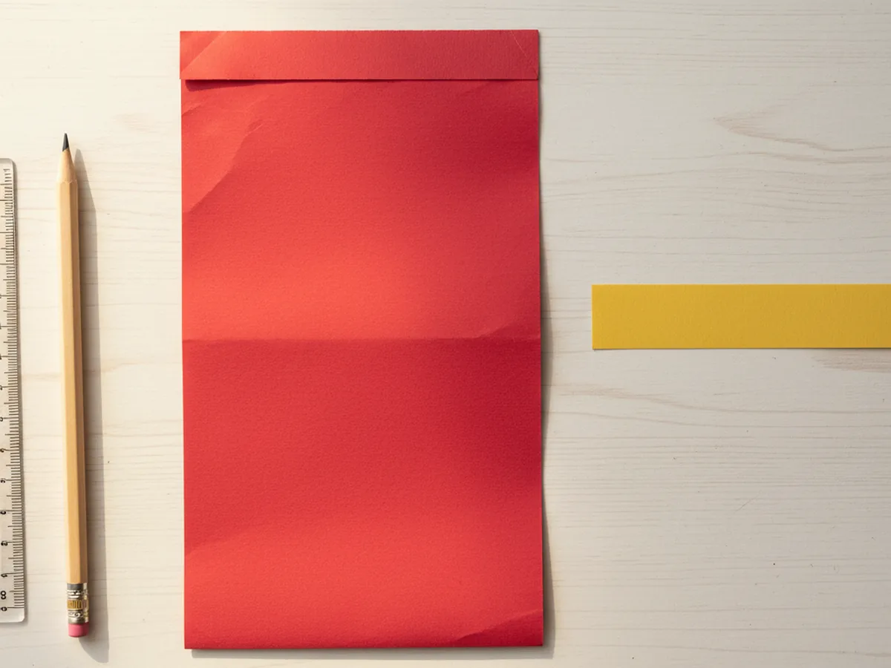
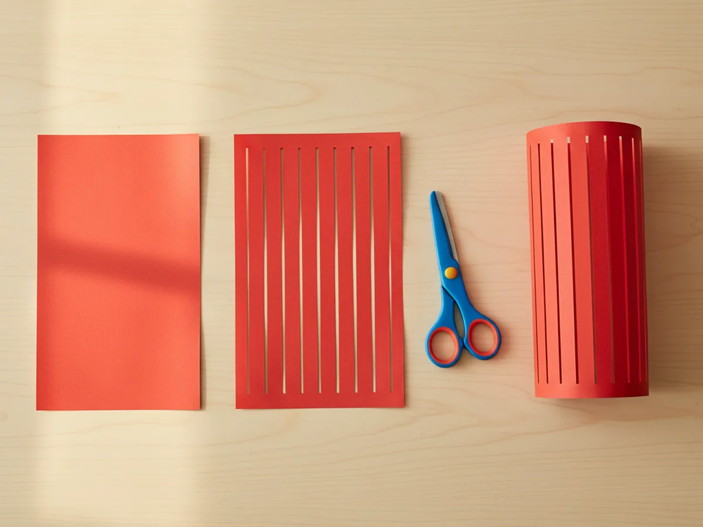
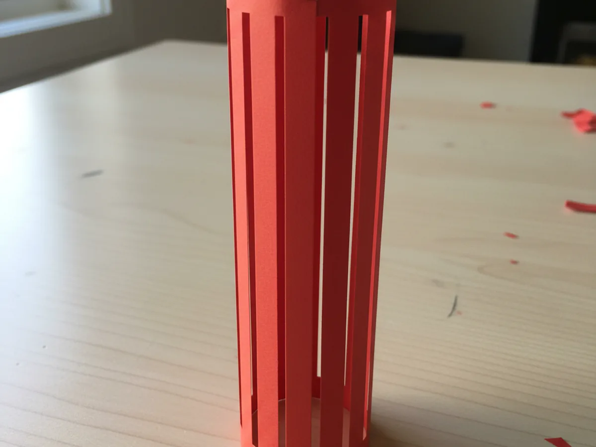
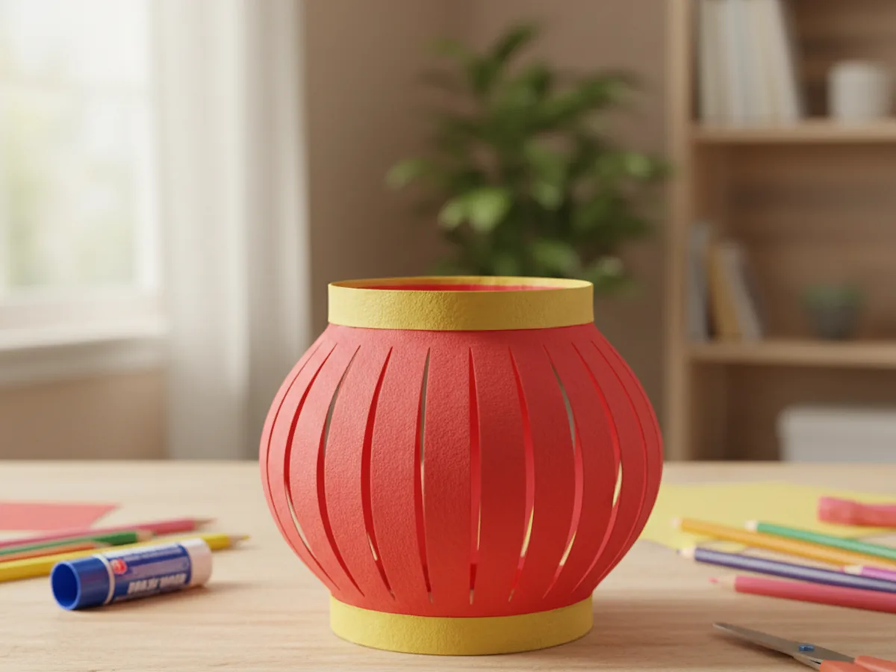
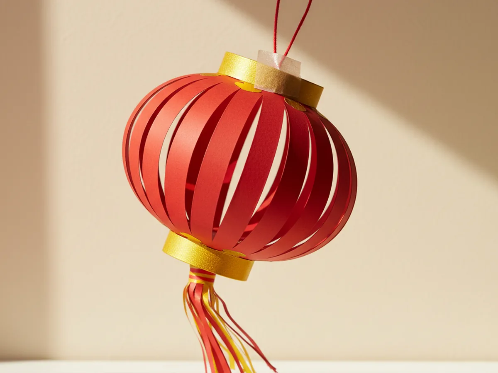

If your kids love anything bright, festive, and a little bit fancy, this chinese lanterns paper craft is going to feel like pure magic. With one red rectangle, a few gold strips, and a little snip-snip-snip along a folded edge, you can turn flat construction paper into a cheerful round paper lantern in about thirty minutes. No glue puddles, no expensive supplies, and a finished decoration that genuinely looks like the real thing. 🏮
What makes this easy chinese lanterns paper craft so lovely is the moment when your child unfolds their cut paper and watches it spring open into a lantern shape. It feels almost like a tiny science trick, and the smile that follows is the best part of the whole project.
Why Kids Love This Craft
Kids adore this chinese lanterns paper craft because it has a built-in surprise. The flat folded paper does not look like much at all when they are cutting it, but the moment they open it back up and pull the ends together, a real lantern shape suddenly appears. That little reveal is incredibly satisfying for young children, and it builds confidence the second they see what their own hands made.
This craft is also wonderful for fine motor practice. Cutting a row of even slits is great for early scissor skills because the cuts are short and the lines are clear. Folding the paper carefully helps with hand-eye coordination, and threading the yarn through small holes works on patience and pincer grip. Even a four year old can do most of this simple chinese lantern craft with a little help, and a slightly older child can do nearly all of it on their own.
And then there is the festive joy. A finished red and gold lantern instantly turns a kitchen, bedroom, or classroom into a celebration. Hang one over the dinner table for a special meal, string a few across a window, or send one to a grandparent in the mail. The paper lantern craft stops being a craft project and becomes part of a family memory, which is exactly what we love at Craft with Mommy. 💕
What You'll Need
Here is everything you need for this chinese lanterns paper craft tutorial. Pull the supplies together before you call your child over so the project starts the moment they sit down.
- Crayola Construction Paper (240 sheets, assorted colors), gives you the bright red and yellow gold sheets you need plus extras for variations.
- Fiskars Pointed-Tip Kids Scissors, the perfect size for small hands cutting straight slits.
- Elmer's Disappearing Purple Glue Sticks (30 pack), washable, dries clear, and ideal for sticking the gold trim bands.
- Bostitch Office Classic Metal Desktop Stapler, makes the cylinder seam secure in one quick mom-handled press.
- Enday Single Hole Punch (1/4 inch), soft grip handles make it easy for kids to add the holes for the hanging loop.
- Lion Brand 24/7 Cotton Yarn (Red), sturdy red yarn that looks beautiful as the lantern hanger.
- Crayola Broad Line Markers (10 classic colors), for adding small painted-on details or a name tag if you'd like.
- A pencil and a small ruler for marking even lines before cutting.
Step-by-Step Instructions
This chinese lanterns paper craft moves through six gentle steps that feel almost like a little game. Take your time, follow along together, and let your child do as much as they can comfortably handle.
Step 1: Cut the Red Rectangle and Gold Strips
Start by cutting one bright red sheet of construction paper into a rectangle about 9 inches wide and 6 inches tall. A standard 9 by 12 inch sheet trimmed in half works perfectly. Then cut two narrow strips of gold yellow paper, each about 9 inches long and 1 inch tall. These two thin strips will become the decorative bands at the top and bottom of the lantern.

Step 2: Fold the Red Rectangle in Half
Place the red rectangle on the table in landscape orientation, with the long edge running left to right. Fold the bottom edge up to meet the top edge so the paper is now half its original height. Press along the fold with a fingernail or the side of a pencil to make a clean crisp crease. The folded edge should sit at the bottom and the open edges at the top, exactly like closing a greeting card.
This single fold is what makes the slits open up beautifully later, so take a moment to line the edges up neatly before pressing the crease.

Step 3: Cut Even Slits Along the Folded Edge
Now for the most fun part of the whole chinese lanterns paper craft. Starting at the folded bottom edge, cut a series of straight parallel slits going up toward the open top edge. Stop each cut about half an inch before the top so the paper stays connected at the top and does not turn into ribbons. Space the slits evenly, about half an inch to one inch apart, all the way across.
You can mark the cut lines with a pencil and ruler first if it helps your child stay even. Younger kids do not need perfectly straight slits, slightly wobbly ones still look adorable in the finished lantern. Encourage them to count the cuts out loud as they go for extra giggles. ✂️

Step 4: Unfold and Roll Into a Cylinder
Carefully open the paper back up so it lays flat. You will see a row of cuts running across the middle of the rectangle with small uncut borders at the very top and bottom. Now roll the paper into a vertical cylinder by curling the two short ends toward each other until they meet. Gently press the two edges together so they overlap by about half an inch.
Hold the seam in place and either staple it twice (top and bottom) or run a glue stick along the overlap and squeeze for thirty seconds. As the cylinder forms, the slits in the middle will naturally bow outward, creating that classic puffy lantern shape. This is the moment your child will gasp.

Step 5: Add the Gold Top and Bottom Bands
Pick up the two gold yellow strips you cut at the start. Run a swipe of glue stick along the back of the first strip and wrap it carefully around the top opening of the cylinder, lining the bottom edge of the strip up with the smooth top rim of the lantern. Press it down all the way around. Trim any extra length so the ends meet neatly.
Repeat with the second gold strip around the bottom opening of the lantern. These two bands hide the cut edges, give the lantern its classic festive look, and reinforce the shape so it holds up beautifully on display. The contrast of red and gold is what makes this chinese paper lantern craft feel so cheerful and finished.

Step 6: Add the Hanging Loop and Tassel
Use a hole punch to make two small holes near the top of the lantern, directly across from each other on the gold band. Cut a piece of red yarn about 12 inches long, thread it through both holes from the inside out, and tie a knot at each end. This forms a sturdy red loop your child can use to hang the lantern from a doorknob, a curtain rod, or a string across the room.
For an extra-pretty finish, cut a small rectangle of red paper and a smaller gold rectangle, snip a fringe along the bottom of each, and roll them into a tiny tassel. Tape it to the inside bottom of the lantern so it dangles down. Once the tassel is on, this chinese lanterns paper craft is officially ready to brighten any wall, window, or hallway. ✨

Variations to Try
Mini Lantern Garland: Cut several smaller red rectangles, about 4 by 3 inches each, and turn each one into a tiny lantern using the same six steps. Thread them onto a long piece of red yarn to make a sweet garland to drape across a window or above a doorway for a celebration.
Decorated Pattern Lanterns: Before folding the red rectangle in step 2, let your child draw gold dots, swirls, plum blossoms, or tiny stars across the paper with markers or a gold gel pen. When the lantern is finished and the slits open up, the patterns peek through beautifully and make each lantern unique.
Glow-in-the-Dark Lantern: For an older child, slip a small battery-operated tea light inside the finished lantern just before bedtime. The slits cast soft warm shadows on the wall, and the result is one of those quiet evening moments your child will absolutely remember.
Final Thoughts
This chinese lanterns paper craft is one of those special little projects that asks for just a few materials and rewards you with something genuinely beautiful. The folding, cutting, and surprise reveal moment make it endlessly fun for young kids, and the finished lantern looks so cheerful that you will want to keep it up long after the craft afternoon is over. Whether you are celebrating Lunar New Year, exploring world cultures, or simply spending a calm hour together, this craft delivers a sweet, festive bonding moment.
If your little one finishes their first paper lantern, I would love to see it. Save this article on Pinterest so other craft-loving mamas can find it easily. Happy crafting!
More Crafts You'll Love
If your child loved this chinese lanterns paper craft, they will adore these other festive paper projects too: